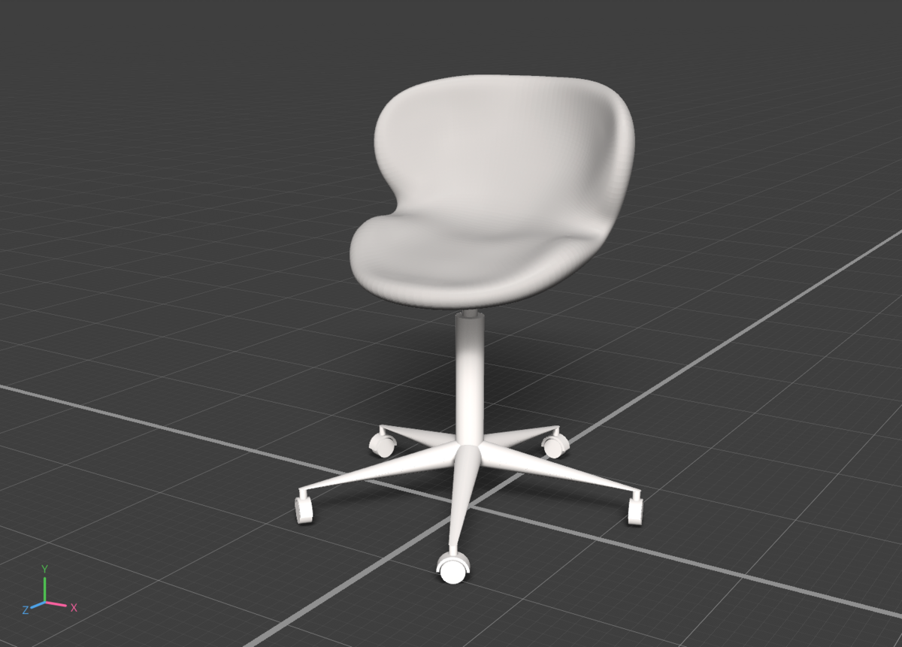

そろそろ坐骨神経痛を認識してから１ヶ月くらいになるような気がするのだけれど、あれから腰痛用のクッションを使ったり電気治療などを続けた結果、だいぶ痛み自体は軽減されてきて、生活の支障はだいぶ軽減されてきた。
でも、痛みが軽くなってきたのと慣れてきただけで、今ひとつ脚の張りとだるさは治ってないので、ぼちぼち精密検査を受けるべきかなと思っているところ。というか歩行に支障があったくらいなのでもっと前から精密検査したほうが良かったのだろうけど、在宅勤務なのもあって痛みさえなければそんなに苦労もないので、幸いというのかどうなのか…。
たぶん根本原因は在宅勤務による運動不足やデスクワークにあるのだろうと思うので、痛みの程度と精密検査の内容次第で次のアクションを考えたいところ。
ちなみにサムネ画像は最近買い替えた椅子で、習作を兼ねたCGでの模写なのだけれど、これにする前に普通のデスクワーク用の椅子に変えたら、やっぱりというべきか腰痛や膝痛などの弊害が出てきたので、いろいろ考えた結果身体を全体で支える流線型のものにしてみた。
本当は以前使っていたバランスチェアタイプの別のもの、例えばバランスシナジーなどにしようかと悩んだのだけれど、坐骨神経痛への悪影響も考えて今回はやめることにした。
でも結局のところ今までで効果があったのは、電気治療やクッションや椅子もそうなのだけれど、力を抜くということかなと思う。
身体に慣れない痛みがあるときは、結構あちこち力んでしまっていたようで、それが逆にいろんな別の張りとか痛みとか副作用を起こしていたように思う。最近は痛みも軽減されて慣れてきたのもあって、力まずににリラックスするように心がけていて、このことは、改めてストレスフルなときこそ実践すべきだったなと自戒しているところ。
自分の症状の原因自体は精密検査してみないとわからないのだけれど、こうした痛みというのは、調べてみると、結構仕事のストレスであったり不安があると痛みが増すらしく、力を抜くというのは案外大切なことなのかなと改めて思った。
それにしても、人によるのだろうけれど高齢者はこうした症状を大なり小なり持ちながら日々の買い物をしていたりするのかなと思うと本当に尊敬して止まない。自分はレジでちょっと待つときさえ、脚がプルプルして緊張したりして、ちょっとした絶望感を一時は覚えたものだけれど、年齢を重ねるということは本当にすごいことだなと改めて実感する。